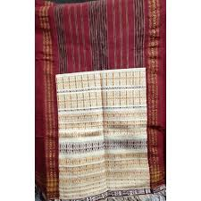

Ulos Rp.150.000,00  Kain ulos tradisional digunakan pada saat acara resmi atau upacara adat batak. Kain ulos termasuk ke dalam salah satu jenis kain tenun tradisinonal turun temurun dikembangkan oleh masyarakat batak. mauliate godang